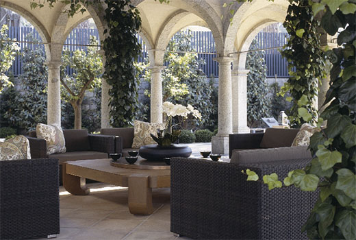
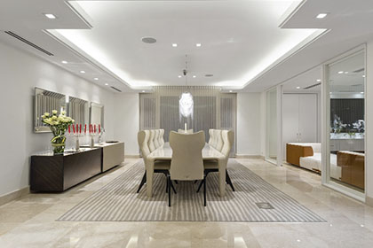

ARQUITECTURA Y DISEÑO DE LUJO
Si estás buscando arquitectos en Argentina, has llegado al lugar ideal. En ZupARQ, servicios de arquitectura, encontrarás todo lo que necesitas para darle forma al proyecto que llevas pensando desde hace tiempo. Nos encargamos de diseñar y crear tu casa a medida para que te sientas identificado y refleje siempre tu esencia utilizando los mejores materiales y marcas que reflejan la arquitectura lujosa.
TU PROYECTO A MEDIDA
Todo lo que se te ocurra lo podemos crear, acompañándote y
cuidándote durante todo el proceso para conseguir una casa o un
negocio a tu medida. Nuestro proyecto integral aporta seguridad,
tranquilidad, cercanía y total disposición por nuestra parte.
No te preocupes si no sabes por dónde empezar, lo importante son
las ganas y la ilusión que seguro que te acompañan en este
momento.
Sabemos el estrés que conlleva encargarse de todos los detalles de una reforma integral por fases, de revisar
las obras y tener que solucionar problemas que pueden ir surgiendo durante el proceso y que pueden hacer que
acabe no siendo la casa que estabas imaginando.
Si los despachos de arquitectura que estás barajando no te inspiran una total confianza, queremos ayudarte y
encargarnos de todo para que salga perfecto. A continuación te presentamos nuestras fases de una reforma
integral adaptándola a las necesidades de cada proyecto.

QUÉ HACEMOS POR TÍ
DISEÑO DE INTERIORES Y EXTERIORES
Un proyecto mal pensado puede afectar a las personas de una manera persistente y durante mucho tiempo, y si hablamos de los espacios interiores, este malestar aumenta. Sabemos lo importante que son los espacios interiores y exteriores para nuestro bienestar y es por ello que diseñar cualquier ambiente es nuestra responsabilidad como profesionales. Abarcamos desde diseño de interiores lujosos de cualquier espacio, refit de yates, diseño de locales comerciales, arquitectura y diseño de exteriores, entre otros muchos. Si quieres elegir lo mejor del diseño de interiores de Buenos Aires o en cualquier parte de Argentina somos tu asesoría de diseño, sea interior como exterior.
ARQUITECTURA
Planos de casas, arquitectura de cocinas, de dormitorios, de despachos o arquitectura de un establecimiento comercial, casas minimalistas o casas estilo kitsch, residencial… Cualquier proyecto nos motiva, nos apasiona y por eso te ofrecemos nuestros servicios de arquitectura adaptados al proyecto que tengas en mente para darle forma. En ZupARQ no solo somos un estudio para constructores, ni uno de los mejores despachos de arquitectura, sino que nos consideramos la herramienta para dar vida a una idea: a tu idea.
INTERIORISMO
El alto interiorismo es un arte que nos da la posibilidad de cambiar totalmente la impresión que sentimos al entrar en un espacio y eso solo lo consiguen los mejores interioristas del mundo. En ZupARQ, interiorismo de lujo, contamos ya con más de 70 años de experiencia en el sector y nos consideramos todo un referente en la creación de interiores de casas de lujo. En nuestro estudio de interiorismo creamos, disfrutamos, ideamos, conectamos y damos forma a las pequeñas ideas convirtiéndolas en grandes proyectos.
PROYECTOS DE ÉXITO
¿Cuáles son nuestros más recientes trabajos? Aquí encontrarás esos proyectos de Arquitectura, Interiorismo, Decoración, Diseño y Paisajismo en los que estamos trabajando ahora y que nos hacen diferentes. Proyectos que cada día nos enorgullecen y que hacen felices a muchas personas, incluyéndonos a nosotros.


DISEÑOS ZupARQ
Si te apasionan los clásicos del diseño pero a su vez te atrae el modernismo, nuestros diseños tienen tu nombre. Creamos muebles de diseño y decoración de lujo para darle a tus espacios la elegancia que necesitan. Puedes encontrar lámparas para poner en un rincón y darle encanto, un sofá para un estudio, un mueble de diseño reconocido, mesas de centro, todo para cocinas modernas con isla, acabados de mármoles, pieles, metales, maderas y tejidos. Si no te encuentras en Buenos Aires, no te preocupes. Nosotros nos encargamos de mostrarte y hacerte llegar la mayor selección de muebles de diseño original, contemporáneo y/o accesorios de decoración de interiores que necesites, siempre creados por nosotros.

NOSOTROS
EN EL MUNDO DEL DISEÑO Y LA ARQUITECTURA DESDE 1950
La historia del Estudio ZupARQ en la arquitectura de Argentina no la encontrarás en los libros, ni siquiera en la red, porque está escrita en cada uno de nuestros proyectos, trabajos, diseños y bocetos que durante más de setenta años nos han llevado por el camino del buen hacer, del lujo, lo exclusivo y personalizado.
“ZupARQ es arquitectura, interiorismo, decoración, diseño y paisajismo unidos para conseguir obras únicas” Carlos Ojínaga Gil Una filosofía diferente en cuanto a diseño de espacios, arquitectura, y la forma distinta de entender la exclusividad y la personalización del lujo.
DÓNDE NOS DAMOS A CONOCER
En nuestro estudio de interiorismo y arquitectura podrás ver todo
lo relacionado con eldiseño de interiores.
Ven y visítanos en nuestro laboratorio deinteriorismo y decoración
ubicados en Via Augusta 244, Buenos Aires donde te traemos los
mejores proyectos de interiorismo y diseño deinteriores.
En nuestro Atelier de Interiorismo y Decoración se encuentran las mejores marcas de decoración. Ediciones de diseño de lujo y
calidad creadas por ZupARQ y complementos de las mejores marcas: Fendi, Rivolta, Baltus, Wind, entre otras. Podrás contratar
decorador de confianza y a tu medida.

SERVICIO DE PROYECTOS ONLINE
Si quieres un proyecto personalizado y profesional sin moverte de casa, este servicio de proyectos a distancia es lo que buscas. Déjate sorprender, la distancia ya no es un problema. Nuestro estudio virtual online te ofrecerá un proyecto exclusivo y personalizado que podrás ejecutar cuando quieras y a tu ritmo. ¿Cómo diseñar una casa sin que estemos presentes? Muy fácil, ONLINE. Podemos transformar tu casa en el hogar que estás buscando antes de invertir en ella, con nuestro método 2D y 3D a medida, un servicio cada vez más demandado en ZupARQ. Te encantará la visualización de arquitectura sin tener que hacer obras primero. Verás tu futuro hogar o reforma sin perder tiempo ni desplazarte. Si hoy en día casi todo se hace online, ¿por qué no tu casa?